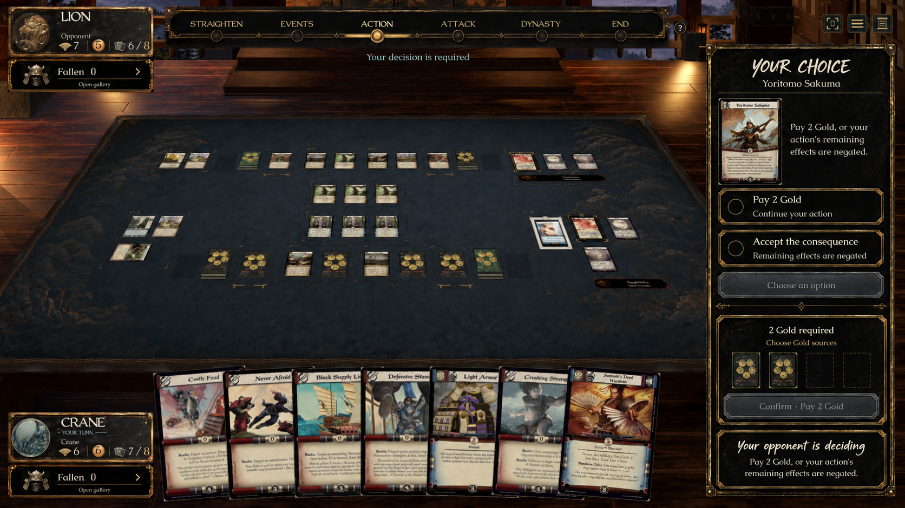
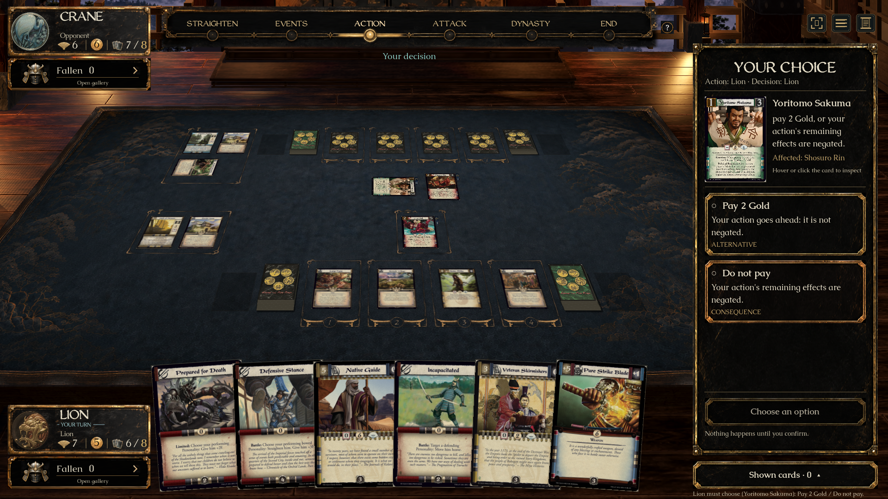
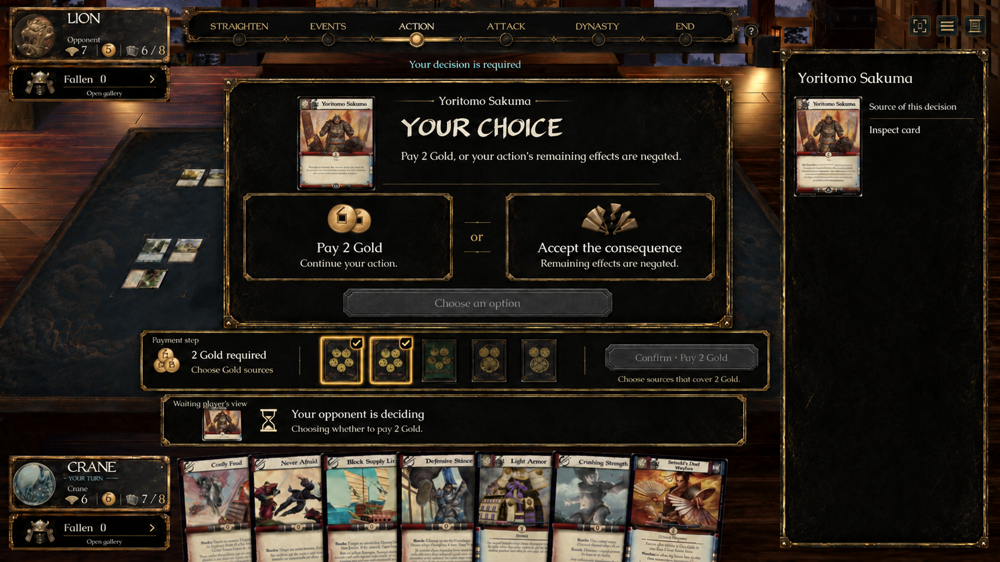
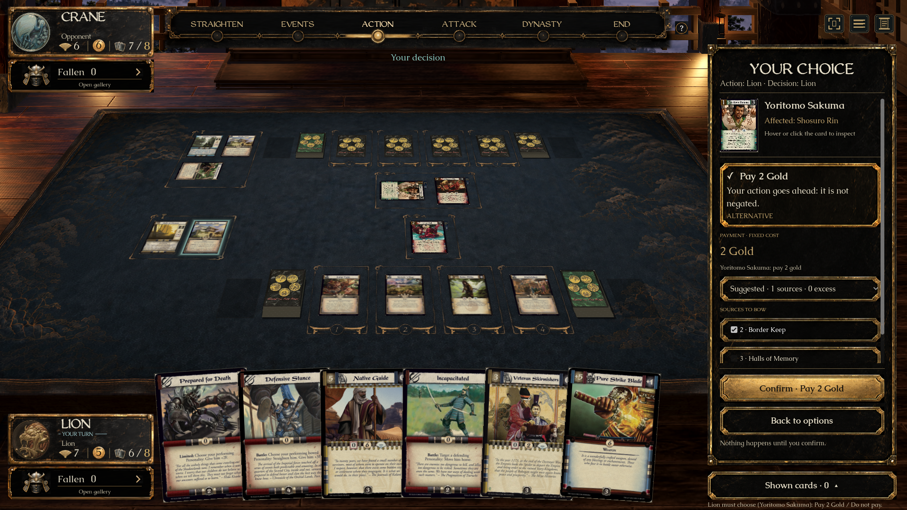

A’s sidebar flow with B’s explicit consequences
Original approved concepts beside the actual game renderer. Real period scans and established game typography are retained.

A — sidebar, source face and distinct choices
Native — full source and explicit option consequences
B — consequences and reviewed payment
Native — chosen option, quoted payment and one confirmation